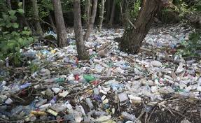
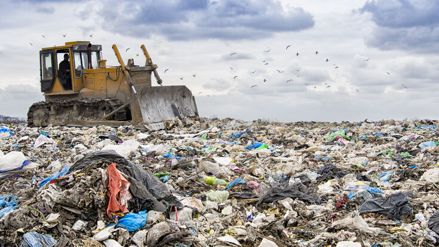

Soil pollution is caused by the presence of human-made chemicals or other alteration in the natural soil environment. It is typically caused by industrial activity, agricultural chemicals or improper disposal of waste. Contamination is correlated with the degree of industrialization and intensity of chemical substance. Contaminated or polluted soil directly affects human health through direct contact with soil or via inhalation of soil contaminants which have vaporized into the air.
 